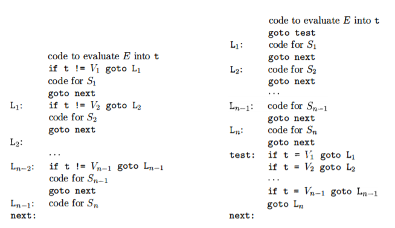

4. control flow
1. 控制流
控制流语句的翻译需要生成跳转的三地址指令。为此，定义如下继承属性:
B.true : 地址变量，存放B 为真时跳转的目标指令的标号B.false : 地址变量，存放B 为假时跳转的目标指令的标号S.next : 地址变量，存放S 后继指令的标号
(1). 控制流语句
e.g.4-1 基本控制流语句的SDT ① P → { S.next = newlabel(); } S { label(S.next); } ② S → { S1.next = newlabel(); } S1 { label(S1.next); S2.next = S.next; } S2 ③ S → id = E; | L = E; ④ S → if { B.true = newlabel(); B.false = S.next; } B then { label(B.true); S1.next = S.next; } S1 ⑤ S → if { B.true = newlabel(); B.false = newlabel(); } B then { label(B.true); S1.next = S.next; } S1 { gen(goto S.next)} else { label(B.false); S2.next = S.next; } S2 ⑥ S → while { B.begin = newlabel(); label(B.begin); B.true = newlabel(); B.false = S.next; } B do { label(B.true); S1.next = B.begin; } S1 { gen(goto B.begin) }为控制流语句生成目标代码时，其跳转的目标是不知道的。以if B then S 为例，B.true 需要等到最右侧的S 分析完才能得知，而B.false 需要等到B 分析完才能得知。因此将标号变量的定义拆分为两步，延迟对它的赋值
- $\small\mathit{newlabel}\ ()$ : 生成存放标号的临时地址变量 $\small\rm L$
- $\small\mathit{label}\ ({\rm L})$ : 将下一条三地址指令的标号存放到 $\small\rm L$ 中
(2). 布尔表达式
e.g.4-2 布尔表达式的SDT ⑦ B → E1 relop E2 { gen(if E1.addr relop E2.addr goto B.true); gen(goto B.false); } ⑧ B → true { gen(goto B.true) } ⑨ B → false { gen(goto B.false) } ⑩ B → ( { B1.true = B.true; B1.false = B.false; } B1 ) ⑪ B → not { B1.true = B.false; B1.false = B.true; } B1 ⑫ B → { B1.true = B.true; B1.false = newlabel(); } B1 or { label(B1.false); B2.true = B.true; B2.false = B.false; } B2 ⑬ B → { B1.true = newlabel(); B1.false = B.false; } B1 and { label(B1.true); B2.true = B.true; B2.false = B.false; } B2
1: ifx < 100 goto 7 2: goto 3 3: ifx > 200 goto 5 4: goto 8 5: ifx != y goto 7 6: goto 8 7:x = 0 8: ...
以
2. 回填
在上一部分中，通过定义继承属性以及延迟赋值的方式解决了指令与目标标号绑定的问题；在这一部分中，将通过回填 (
B.truelist : 指令标号的列表，这些指令的目标标号相同，等于B.true B.falselist : 指令标号的列表，这些指令的目标标号相同，等于B.false S.nextlist : 指令标号的列表，这些指令的目标标号相同，等于S.next
(1). 布尔表达式的回填
e.g.4-3 布尔表达式的SDT ⑦ B → E1 relop E2 { B.truelist = makelist(nextquad); B.falselist = makelist(nextquad + 1); gen(if E1.addr relop E2.addr goto _); gen(goto _); } ⑧ B → true { B.truelist = makelist(nextquad); gen(goto _); } ⑨ B → false { B.falselist = makelist(nextquad); gen(goto _); } ⑩ B → ( B1 ) { B.truelist = B1.truelist; B.falselist = B1.falselist;} ⑪ B → not B1 { B.truelist = B1.falselist; B.falselist = B1.truelist;} ⑫ B → B1 or M B2 { B.truelist = merge(B1.truelist, B2.truelist); B.falselist = B2.falselist; backpatch(B1.falselist, M.quad); } ⑬ B → B1 and M B2 { B.truelist = B2.truelist; B.falselist = merge(B1.falselist, B2.falselist); backpatch(B1.truelist, M.quad); } ⑭ M → ε { M.quad = nextquad; }
- $\small\mathit{makelist}\ (\mathit{i})$ : 创建一个只包含标号 $\small\it i$ 的列表，返回指向此列表的变量
- $\small\mathit{merge}\ ({\mathit{p_1,\ p_2}})$ : 合并两个列表，返回指向新列表的变量
- $\small\mathit{backpatch}\ ({\mathit{p,\ i}})$ : 将 $\small\it i$ 作为目标标号插入列表 $\small\it p$ 指代的指令序列中
- $\small\mathrm{M}.\mathit{quad}$ : 通过一个临时变量保存当前来看的下一条指令的标号
(2). 控制流语句的回填
e.g.4-4 基本控制流语句的SDT ② S → S1 M S2 { S.nextlist = S2.nextlist; backpatch(S1.nextlist, M.quad); } ③ S → id = E; | L = E; { S.nextlist = null; } ④ S → if B then M S1 { S.nextlist = merge(B.falselist, S1.nextlist); backpatch(B.truelist, M.quad); } ⑤ S → if B then M1 S1 N else M2 S2 { S.nextlist = merge(merge(S1.nextlist, N.nextlist), S2.nextlist); backpatch(B.truelist, M1.quad); backpatch(B.falselist, M2.quad); } ⑥ S → while M1 B do M2 S1 { S.nextlist = B.falselist; backpatch(S1.nextlist, M1.quad); backpatch(B.truelist, M2.quad); gen(goto M1.quad); } ⑮ N → ε { N.nextlist = makelist(nextquad); gen(goto _); }
(3). break、continue、goto
goto : 通过符号表和回填实现break : 假设循环语句由非终结符 $\small\rm S$ 生成，可以通过符号表跟踪外围的 $\small\rm S$，在遇到break 语句时生成未完成的跳转代码，然后将这些代码放到 $\small\mathrm{S}.\mathit{nextlist}$ 中continue : 类似于break
3. Switch 语句

右侧部分是更好的方案，它可以实现"一趟式"的翻译，并且把所有跳转指令聚集在一起，使得代码生成器轻松识别出多路分支，并进行优化。下面给出它的翻译方案:
switch ( E ) { t = newtemp(); gen(t = E.addr); test = newlabel(); gen(goto test); }
case V1 : { L1 = newlabel(); label(L1); map(V1, L1); }
S1 { next = newlabel(); gen(goto next); }
... ...
default : { Ln = newlabel(); label(Ln); }
Sn { gen(goto next); label(test);
gen(if t = V1) goto L1;
... ...
gen(if t = Vn-1) goto Ln-1;
gen(goto Ln); label(next);
}
为了让分支语句更容易被代码生成器探测到，通常把 $\small\mathrm{if}\ \ \mathit{t}=V_i\ \ \mathrm{goto}\ L_i$ 改写成 $\small\mathrm{case}\ t\ \ V_i\ L_i$ 的形式 ($\small\mathrm{goto}\ L_n$ 改写成 $\small\mathrm{case}\ t\ \ t\ L_n$)，二者的含义是相同的。